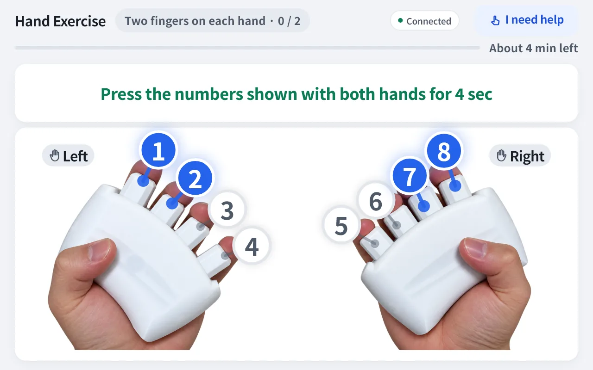
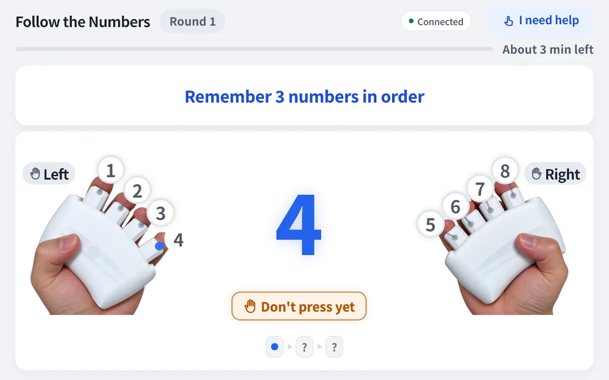

Technology
Seven ways to read a finger press
Each activity reads a different aspect of a press. Explore how the app reads lever travel in hand exercise and timing in rhythm play.
Planned for launch
Choose a scene
Follow a press through the app and see how it calculates the sample records.
Open MP4 videoFrom a finger press to a training record
Choose an activity to compare its inputs and records.
Grip input

Eight independent levers capture how far each finger presses.
Training screen

Hold the highlighted levers for the time shown.

Press the matching lever as the note reaches its ring.

Remember the numbers and press them in order.
Training record
48-trial average · example data
48-trial average · example data
12-round average · example data
How one lever registers a press
Sensor distance and app response
See how the app evaluates an example distance reading every 0.1 seconds.
With the default setting, full press begins at 65% of calibrated travel.
Open MP4 filmTechnical reference
Seven areas the app records
Training records are sorted into seven areas. The names label groups of records; they describe the recorded activity. Screens for older adults show only content names. The staff dashboard groups records by activity. The six metrics from reaction through sequence each require at least eight samples under their own counting rules. The activities below are the examples used in the film.
| Domain | What the app records | Calculation | Activity in the film |
|---|---|---|---|
| Reaction | Time from cue to target press | Median reaction time within the activity | Hand Exercise |
| Separation | Trials with an additional finger press | Trials with an extra lever press ÷ trials observed | Hand Exercise |
| Control | Press depth within each finger’s calibrated range | Mean of valid trial peak depths (%) | Hand Exercise |
| Hold | Target and actual hold durations | Mean of actual / target duration, capped at 100% per trial | Hand Exercise |
| Timing | Beat judgement and signed press offset | Mean judgement weight (1, 0.5 or 0) as a percentage, excluding timeouts | Rhythm Play |
| Sequence | Positions reproduced in order | Average number of correct positions per round | Follow the Numbers |
| Coordination | Attempts and successes for each hand | Successes / attempts for each hand | Hand Exercise |
What each activity records
See which areas each activity focuses on and which it also covers.
Swipe sideways to see more activities.
| Area | Hand exercise | Rhythm play | Follow the Numbers | Mole catching | Fist Dodge | One Finger at a Time | Water Pour | Beat Echo |
|---|---|---|---|---|---|---|---|---|
| Reaction | Also covered | Not covered | Also covered | Main area | Not covered | Not covered | Not covered | Not covered |
| Separation | Main area | Not covered | Also covered | Also covered | Not covered | Main area | Not covered | Not covered |
| Control | Not covered | Not covered | Not covered | Not covered | Not covered | Also covered | Main area | Not covered |
| Sustain | Main area | Also covered | Not covered | Not covered | Also covered | Not covered | Also covered | Not covered |
| Beat | Not covered | Main area | Not covered | Not covered | Not covered | Not covered | Not covered | Main area |
| Sequence | Not covered | Not covered | Main area | Not covered | Not covered | Not covered | Not covered | Not covered |
| Coordination | Also covered | Also covered | Not covered | Not covered | Main area | Not covered | Not covered | Not covered |
Main area Also covered
The app records reaction time in Mole catching separately from reaction times in other activities.
Device and app setup
Follow a finger press from the grip to the staff dashboard.
-
Haptic grips
Each grip has four independent levers. A light shows which lever to press, and the grip vibrates on a full press.
8 levers · signal about every 0.1 s -
Bluetooth
Tablet app
Guides training on an Android tablet and records each trial. If the internet drops, it keeps the records and sends them once reconnected.
Sound · large text · practice first -
Internet
Records server
Stores trials by ID number, totals them by session and week, and calculates level suggestions.
ID numbers, not names -
Web browser
Admin web
Shows center status and each participant's records, provides PDF reports and CSV, applies level suggestions and manages accounts.
Staff apply suggestions
Activities and difficulty levels
Each activity has its own difficulty settings. The pattern and speed depend on the stage and step.
| Activity | How it works | Main areas | Level steps |
|---|---|---|---|
| Hand exercise | Press the lever that matches the lit number and hold it for the time shown. Five formats (one hand at a time, both hands, two on one hand, different on each hand, two on each hand) run in a loop. | Separation · Sustain (Reaction · Coordination) | 13 steps |
| Rhythm play | Press the matching lever as each note reaches its ring. One song is one round. | Beat (Sustain · Coordination) | 19 steps |
| Follow the Numbers | Watch numbers one at a time, remember them and press them in the same order. Five rounds make one block. | Sequence (Reaction · Separation) | 8 steps |
| Mole catching | When a mole pops up, press the matching lever to catch it. Each round goes explanation, practice, then the main round. | Reaction (Separation) | 7 steps |
| Fist Dodge | Squeeze the whole left hand to go left and the whole right hand to go right, one lane at a time, dodging the dark clouds that come down. You open and squeeze again to move again, and both hands are needed. | Coordination (Sustain) | 10 steps |
| One Finger at a Time | Gently press only the lit finger and hold until the flower blooms. The other fingers rest. | Separation (Control) | 12 steps |
| Water Pour | The farther you press the lever, the higher the water rises. Match the water level to the yellow band and hold until the flower blooms. Let go and it goes down. | Control (Sustain) | 12 steps |
| Beat Echo | Listen to the whole rhythm, then tap it back on your turn. | Beat | 10 steps |
The table lists the number of difficulty steps for each activity. Planned activities, including seasonal and regional theme packs, are listed separately.
How records are stored
Follow a lever signal from calibration to a participant’s record and a suggested level.
Grip signal
The lever position is sent for each finger about every 0.1 seconds.
Calibration
Using the "released to fully pressed" length that staff calibrated, it is read as press depth (%).
Trial record
For each trial, the app saves the reaction time, result and press depth for each finger, along with any other levers pressed.
Totals
Records are gathered by session and week and shown in the admin web, PDF reports and CSV.
Suggestion
Levels are suggested from the records, and staff confirm before applying.
Values saved for one trial Example values
Hand exercise · left hand, finger 2
- Result
- Success
- Reaction time
- 620 ms
- Press depth
- 78 %
- Other fingers pressed
- None
The vertical mark is the press depth that counts (65% by default; staff choose 50, 65 or 80%). The values above are fictional examples for explanation.
How one trial is counted Accuracy calculation
Based on trials attempted
- Success
- Counts as 1
- Partial success
- Counts as 0.5
- Failure
- Counts as 0
- Timeout
- Left out of the denominator and counted separately
The app calculates an accuracy value only if at least one trial was attempted.
How values are calculated
These are the formulas the app uses for its records.
- Accuracy
- Sum of (success 1 · partial success 0.5 · failure 0) ÷ trials attempted × 100. Timeouts are left out of the denominator and counted separately.
- Time taken
- The median reaction time (ms) of trials, excluding timeouts and Rhythm play. Rhythm play records beat timing separately.
- Completed share per hand
- For each hand, times completed ÷ times attempted × 100. Left and right are shown separately and are not combined into one number.
- Hold time
- In Hand exercise, the sum of time actually held (counted only up to the target time) ÷ the sum of target times × 100.
- Presses on the beat
- (exact + good × 0.5) ÷ rhythm trials × 100. A missed note is recorded as a failure.
- Press depth
- The deepest point the target lever reached during a trial, as a percentage of its calibrated travel (0–100%). This describes lever movement. Compare readings only across trials for the same participant.
- Other fingers pressed
- Which other levers were fully pressed instead of, or along with, the target lever, and how often. Each new full press counts once.
The app records press depth and other fingers pressed separately. Neither is used to calculate accuracy or suggest a level. The definitions are drafts under development and may change.
How levels are suggested
It does not look at accuracy alone; it also looks at timeouts caused by not pressing.
Starting level
Each activity starts at its easiest step. Staff set its difficulty and speed.
Trials that are counted
Only trials at the current level in the last 28 days, and only after the level was last changed.
How timeouts affect suggestions
If the timeout share is 20% or more, the level is not raised even when accuracy is high, and "Continue" is shown with the reason. At 50% or more, "Please check the position and the device once" is added. This keeps timeouts caused by not pressing from being read as "too hard" and lowering the level.
No immediate reversal
After a level change, the system waits two sessions before suggesting another change.
Staff confirm level changes
Staff decide in the admin web with [Apply], [Later] or [Ignore]. Applying, ignoring and changing, with the reasons, are kept in the history.
The threshold values are provisional and will be set after reviewing actual use records.
Records by finger
The record summary in the admin web gives no scores or rankings. It shows weekly attendance, where each activity's level stands, and records by finger.
- RecordsPerformance records and reports by finger
- SuggestLevel and speed suggestions based on performance records
- PlanTraining plan suggestions from records (planned; staff apply them)

The staff dashboard is currently available only in Korean. This English rendering shows a development screen with fictional data and participant IDs. Product specifications, screens and available languages may change.
Planned activity suggestions
We are exploring a feature that uses AI to suggest training plans from accumulated training records. It is not part of the product yet, and its timing has not been set.
Records
Levels and session records build up for each activity.
Suggestion
Those records are used to suggest the next training plan.
Staff confirmation
Staff decide whether to apply it. The app does not change anything on its own.
Checking the applicable regulations comes first. It would only suggest a training plan; it would not judge a person's condition and is not a diagnosis or a decision about treatment.
Patent applications
We have filed three domestic patent applications covering independent finger input, the haptic structure and training composition (pending, not yet granted).
| Application no. | Filing date | Certificate |
|---|---|---|
| 10-2025-0169761 | 2025.11.11 | View certificate |
| 10-2026-0112080 | 2026.06.19 | View certificate |
| 10-2026-0112861 | 2026.06.20 | View certificate |
Official certificates of application (Korean and English). Personal details are redacted. Drawings and claims are not shown because they have not been published.
Performance record noticeThese values are records of how training was done. They are not a diagnosis, and medical decisions belong to a medical professional.